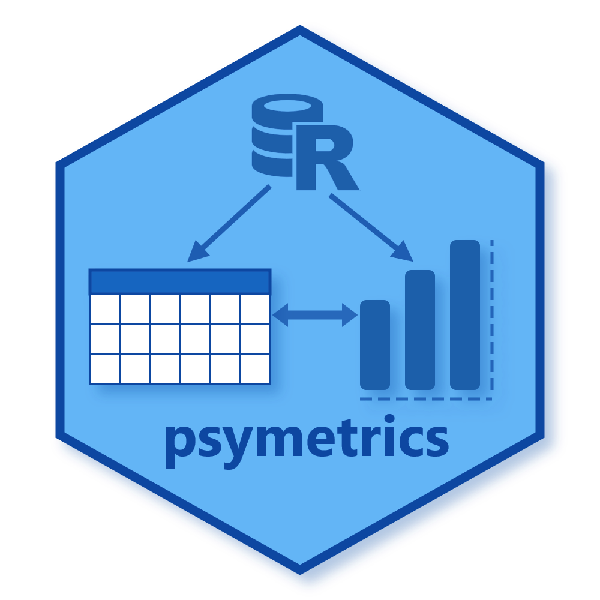

psymetrics provides a unified workflow to inspect psychometric model fit, compare fitted models, extract parameter estimates, and generate publication-ready outputs.
Current scope
The package currently focuses on lavaan CFA and SEM workflows.
- Stable now:
- Fit extraction with
model_fit() - Fit comparison with
compare_model_fit() - Parameter extraction with
model_estimates() - Reporting with
format_results()andsave_table() - Loading visualization with
plot_factor_loadings()
- Fit extraction with
- In development:
- Measurement invariance helpers
- Additional model-class support (
psych,mirt)
Install
# install.packages("pak")
pak::pak("brianmsm/psymetrics@v0.3.0")Recommended path
- Start with the fit workflow article.
- Continue with SEM and parameter estimates.
- Finish with reporting and visualization patterns.
Documentation map
Contributing
Issues and feature requests are welcome:
- Bug reports: include a minimal reproducible example.
- Feature requests: include the target workflow and expected output.
GitHub issues: https://github.com/brianmsm/psymetrics/issues